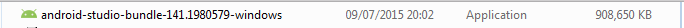
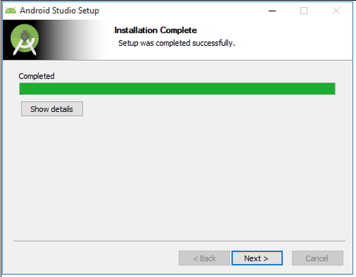
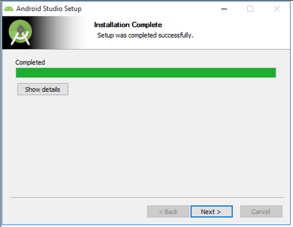

Objectives
Here we discuss how to install and set up effective tools for Android application development. These include the Android Studio IDE + an emulator. The emulator we hope to use - Genymotion - is a third party application not strictly part of the android build tools. Optionally, in some cases, we may use an emulator that is included as part of Android Studio installation although this may prove significantly slower than Genymotion. It may not be possible to use an emulator in some environments and in such cases it shall be necessary to test on a physical device such as a phone or tablet.
Android Studio & SDK Tools
These steps describe how to download and install Android Studio & bundled SDK Tools:
-
Warning: Android Studio, at this time, requires that Java 7 JDK is installed. The IDE is not compatible with Java 8. See the documentation System Requirements for Android Studio. This should be attended to before proceeding with the steps below.
-
Warning: Before proceeding we recommend that, to avoid the occurrence of obscure errors, you delete any legacy version of Android Studio and Android SDK that might be present on your system.
- On Windows this may be achieved by, for example in the case of Windows 7, accessing Programs and Features in the Control panel and double clicking on Andoid Studio and ticking all checkboxes as shown in Figure 1.
- In the case of the Mac, the following script has successfully removed all traces of legacy Andoid Studio (Mavericks & Yosemite):
#!/bin/bash
sudo rm -Rf /Applications/Android\ Studio.app
sudo rm -Rf ~/Library/Preferences/AndroidStudio*
sudo rm ~/Library/Preferences/com.google.android.studio.plist
sudo rm -Rf ~/Library/Application\ Support/AndroidStudio*
sudo rm -Rf ~/Library/Logs/AndroidStudio*
sudo rm -Rf ~/Library/Caches/AndroidStudio*
sudo rm -Rf ~/AndroidStudioProjects
sudo rm -Rf ~/.gradle
sudo rm -Rf ~/.android
sudo rm -Rf ~/Library/Android*
exit 0
- Download the latest Android Studio and save to a temporary folder.
- In the case of OSX (Mac) double click on the downloaded dmg file (example android-studio-ide-141.1980579-mac).
- Drag the Android Studio icon to the Applications folder. See Figure 3.
- Drag the Android Studio icon to the Applications folder. See Figure 3.

- In the case of Windows double click on the downloaded installer which lookes something like (not necessarily exactly like) this: 
- Then proceed through the various steps in the wizard such as those illustrated in the screenshots below.
- Note: these screenshot refer to installation on Windows 10.


 



Your First Android App
To create your first Android app launch Android Studio and follow the sequence of steps in the figures below:

In Figure 2 you will be asked for your Company Domain. The purpose of this is to facilitate compliance with the Java package naming convention. Here, in this lab, we provide a fictitious domain.


Figure 7 show a typical perspective when the project opens.


Figure 11, Choose Device, shows the built-in-emulator (Android virtual device - AVD) selected.
There are three possible approaches to testing your Android app during development:
- Use the AVD in conjunction with the HAXM accelerator:
- Note that unless you successfully deploy the HAXM accelerator it is unlikely that the AVD will run sufficiently quickly to be of any real value.
- HAXM is deployable only on Intel based processors. It will not work, for example, on computers using AMD chips as their main microprocessors.
- Use the third party Genymotion virtual device. This is discussed in a following step.
- Genymotion will not work in all environments. For example, at the time of writing it is not fully supported on Windows 10 and considerable manual configuration (by trial and error) has been required. The situation may, hopefully, improve with further updates of Virtual Box and Genymotion.
- Problems have also been encountered on earlier Windows versions.
- Use a physical device such as an Android phone or Android tablet.
- We provide an example of how to do this later in the lab.
The following screenshots illustrate use of built-in AVD to test the app:


Genymotion emulator installation
During development of an Android application it is necessary to compile and run the app many times. The app may be tested by installing and running it on a physical device, such as an Android phone or tablet. But the app may also be run on a virtual device or emulator. In this course we shall have a choice of two emulators, Genymotion and Android Virtual Device (AVD).
- Genymotion is produced by a third party and includes a free version for personal use. Our experience to date is that it is orders of magnitude faster than AVD and consequently it is our intention to use this in preference to AVD.
To use Genymotion requires that it be downloaded and installed to your computer and that a Genymotion plugin be installed and configured in Android Studio.
-
This step briefly describes how to download the Genymotion emulator ensuring, in the case of Windows, you select the version that includes VirtualBox.
-
The next step describes how to install and configure the Genymotion plugin in Android Studio.
- A useful guide to the install procedure is online here
Download Genymotion
Register an account with Genymotion.com and download the Free Genymotion emulator.

Install on a Windows platform
Once downloaded, click on the uninstalled Genymotion app and step through the wizard.
- The following series of screenshots is indicative of the steps in installing on a Windows platform (collectively referred to as Figure 3):


Finally, you may be prompted to add a new virtual device as indicated in Figure 4: press the No button.

Installing on an OSX (Mac) platform
-
Download and install VirtualBox (if it is not already installed).
- A User Manual is also available on the VirtualBox download page.
-
Double click on the downloaded dmg installer file file (example genymotion-2.2.2.dmg).
- Drag the Genymotion icon (at the left in Figure 4) to the Applications folder (see Figure 5).
Genymotion plugin
Note that what are referred to as Preferences on the Mac in Android Studio are Settings on Windows. These are different names for essentially the same window.
| - Figure 1 is a screenshot from a Windows 10 install in which Settings is accessed from the menu File | Settings command (Ctrl-Alt-S). |
|---|
This step briefly describes how to:
- Install Genymotion plugin in Android Studio.
- This emulator could substitute for an actual mobile device during development.
- Create a new virtual device within Genymotion.
Here is a brief instruction set on how to install the plugin:
- Open Android Studio preferences (Mac) or settings (Windows).


- Select Plugins in left navigation bar.
- Search for Genymotion plugin (Figure 3).

- Browse to locate plugin, install plugin, shut down and restart Android Studio (Figure 4).

- When Studio reopens, click on the Genymotion icon (Figure 5).
- Select path to Genymotion app:
- Windows: C:\Program Files\Genymobile\Genymotion (Figure 6)
- Mac: /Applications/Genymotion.app (Figure 7)


- Once the Genymotion path has been inserted click on the (red) Genymotion toolbar button again. This launches the Genymotion Device Manager as shown in Figure 8.

- Click the New button in the Genymotion Device manager.
- The Virtual device creation wizard should now open as shown in Figure 9.
- Select Google Nexus 4 - 4.3 - API 18-768x1280
- Click the Next button.
- The virtual device properties are then displayed. See Figure 10.

- Click Next to retrieve and deploy the new virtual device.
- The response should be as shown in Figure 11.

- Once the screen in Figure 11 appears, press the Finish button.
- The Genymotion virtual device should then be displayed as depicted in Figure 12.
-
Select the virtual device and press the Start button shown in Figure 12.
-
Genymotion emulator should then launch (Figure 13).

Install app on Genymotion
Install and test the default app on the Genymotion emulator as shown in following figures.
- Click on the Genymotion toolbar icon (as shown in Figure 4 in the previous step).
Now, in addition to the built-in emulator, Genymotion is available:


Android physical device
This step applies only to those who may intend using an external device such as an Android phone or tablet.
- It also applies to the default app we have just developed. More sophisticated apps will likely require alterations to the build.gradle file provided below.
Connect the device to your computer using a suitable USB cable.
The following apply to a Prestigio MultiPhone PAPO3540 DUO and is not to be taken as applicable to all Android devices.
- This device runs on platform Android 4.1.2 (API 16).
- This requires that the app build.gradle file is appropriately configured as exemplified in the code below.
- It also requires an appropriate platform installation as shown in Figure 1.
apply plugin: 'com.android.application'
android {
compileSdkVersion 22
buildToolsVersion "22.0.1"
defaultConfig {
applicationId "app.donation"
minSdkVersion 16
targetSdkVersion 22
versionCode 1
versionName "1.0"
}
buildTypes {
release {
minifyEnabled false
proguardFiles getDefaultProguardFile('proguard-android.txt'), 'proguard-rules.pro'
}
}
}
dependencies {
compile fileTree(dir: 'libs', include: ['*.jar'])
compile 'com.android.support:appcompat-v7:22.2.1'
}
For Mac developers
When you first make a connection you may be presented with a message along the following lines, depending on the software on and the model of your phone:
Attention Unable to find software on your PC that can recognise your device. Service pack 3, Windows Media Player, version 11 or higher or USB driver for Windows or Android file transfer for Mac OS must be installed (see www.microsoft.com or www.android.com/filetransfer).
When you open www.android.com/filetransfer you will be presented with a screen somewhat similar to that shown in Figure 2:
Download and install the file androidfiletransfer.dmg:

Installation on Android physical device
The following is applicable to deploying from Mac or Windows
- On your phone, open settings locate and Developer options. Then enable (tick) checkboxes:
- USB debugging
- Allow mock locations
Some phones, such as Samsung Galaxy models, may hide the USB debugging option in which case it will be necessary to check the documentation or online forums to discover how to expose this feature.
- For example,in the case of Samsung Galaxy III, open Settings | More | About and click a number of times on the Build number. Some feedback is provided as you click. The developer mode where USB debugging should then be revealed and may be found under More | System manager.
Still on settings, and where such option available:
- Enable NFC (allow data exchange when device touches another device).
You should receive a notification:
- Connected as a media device which indicates that you may now install an application directly from your computer.
In Android Studio import Donation, MyRent or any other functioniong app of your choice and run the menu command Run | Run 'app':
.
The Android Device Chooser window should open, displaying the connected android phone:
Select the device, in this case Prestigio PAP3540DUO and press OK.
- After a few moments the application should install and launch on your phone.
Setup summary